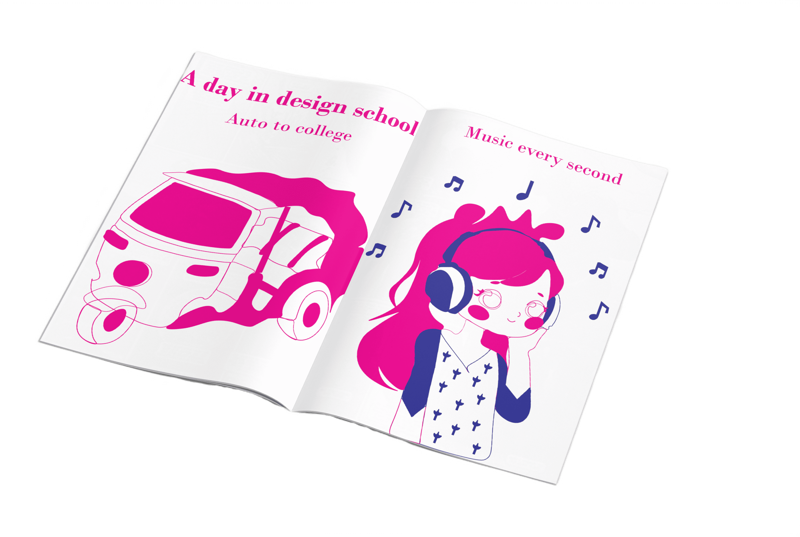
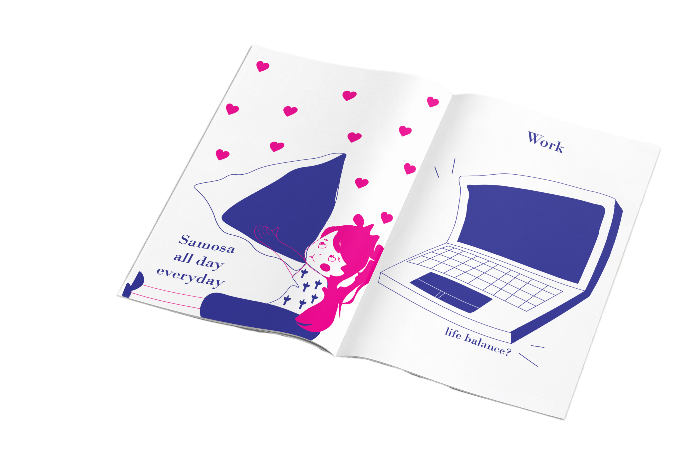
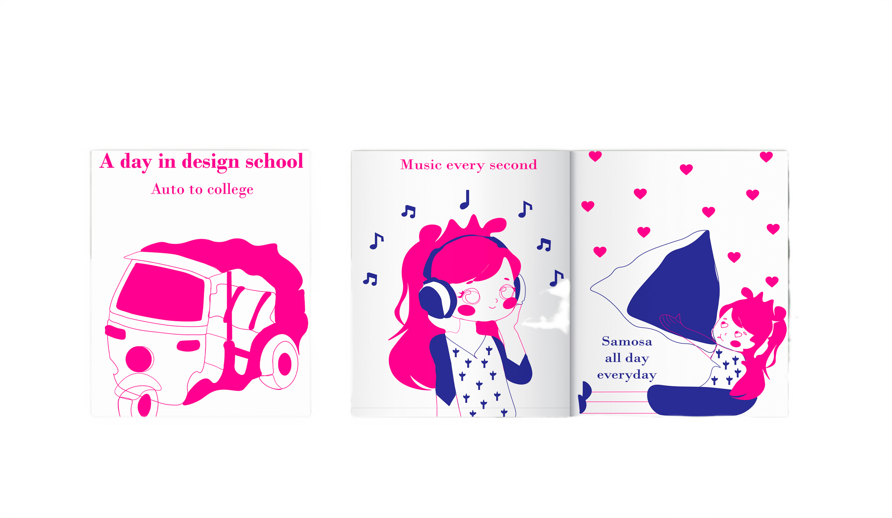

Japanese inspired zine
We had to create a Japanese inspired zine with only two colours or lesser and 4 pages.
There were a lot of art styles to choose from but I choose the kawaii art style as I found that the most interesting, quirky and fun to work on! Our theme was, ‘A day at design school’.



My routine in college is very simple, I travel everyday morning in an auto while listening to music and listen to music constantly throughout the day. I eat a samosa everyday during the break and come home and finish my assignments. It is always difficult to choose only two colours and work with them but I chose pink and blue as I have always loved the combination of these two colours and they go really well together. I loved trying out this new art style!